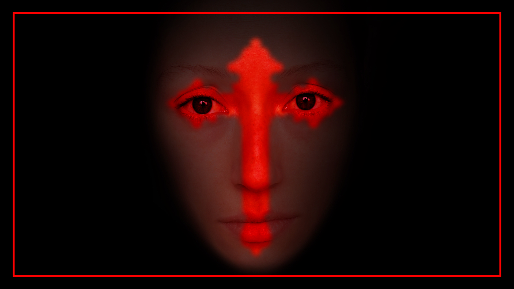

Transfloratie
Dans & muziektheater

Over Transfloratie
Een korte introductie op Transfloratie — waar gaat het over, wat maakt het bijzonder? Vervang deze tekst door je eigen omschrijving van het project.
Hier komt de uitgebreidere tekst: het concept, het onderzoek, de bewegingstaal en de context van het werk. Voeg zoveel alinea's toe als je wilt.